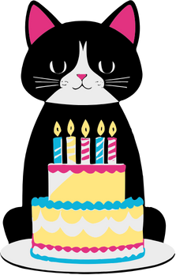

🎂 Bem vindo(a) à BoLucas! 🎂
O cantinho dos bolos feitos com carinho e sabor de verdade. Aqui, cada receita é pensada para transformar momentos simples em grandes memórias. Nossos bolos são preparados com ingredientes selecionados, uma pitada de criatividade e muito amor — porque acreditamos que todo dia merece um pedacinho de felicidade. Do tradicional ao inusitado, temos o bolo perfeito esperando por você.
Confira os melhores bolos da BoLucas!


/s.glbimg.com/po/rc/media/2013/01/18/15_13_21_366_mousse_maracuja400300.jpg)
Os itens de festa com os melhores preços!
